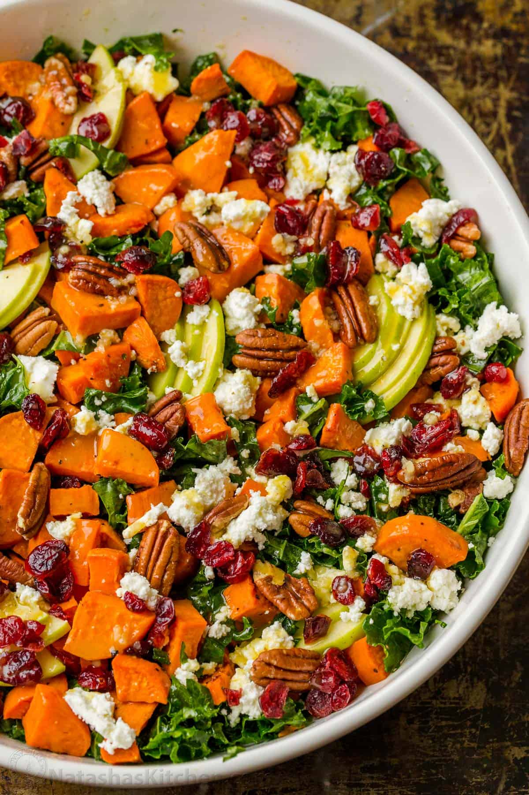

Home
Sweet Potato Salad

Description
This Roasted Sweet Potato Salad has all the best flavors of Fall wrapped in one delicious salad.
It’s loaded with kale, creamy sweet potatoes, crisp apple, and crunchy pecans with the best maple vinaigrette dressing.
Ingredients
For Roasted Sweet Potatoes:
- 1 1/2 lbs sweet potatoes
- 1 Tbsp olive oil
- 1 Tbsp maple syrup
- 1/2 tsp sea salt
- 1/4 tsp black pepper
For the Salad:
- 1 bunch kale, (10 cups chopped)
- 1 apple, thinly sliced
- 1/2 cup pecans, lightly toasted if desired
- 1/2 cup dried cranberries, or pomegranate seeds
- 2 oz goat cheese, (1/2 cup crumbled)
Dressing Ingredients:
- 3 Tbsp apple cider vinegar
- 1 Tbsp maple syrup
- 1 Tbsp dijon
- 1 garlic clove, finely minced or pressed
- 1/3 cup extra virgin olive oil
- 1/2 tsp fine sea salt
- 1/8 tsp black pepper, freshly ground
Instructions:
Prep:
- Preheat oven to 425˚F. Line a large rimmed baking sheet with parchment paper or silicone liner.
Toast pecans on a dry skillet over medium heat, tossing frequently for a few minutes until golden and fragrant then transfer to a plate to cool.
How to Roast Sweet Potatoes:
- Peel and dice sweet potatoes into 1/2” thick pieces and transfer them to a mixing bowl. Drizzle with 1 Tbsp olive oil, 1/2 Tbsp maple syrup, 1/2 tsp sea salt, and 1/4 tsp black pepper and toss to combine.
- Spread sweet potatoes out onto the prepared baking sheet. Bake at 425˚F for 30 minutes, flipping the sweet potatoes after 20 minutes to promote even roasting. Remove from the oven and let cool while preparing the salad.
How to Make Salad Dressing:
- In a small bowl or mason jar, combine all of the ingredients for the salad dressing in the order they are listed and thoroughly whisk together until well combined. You may need to re-whisk before dressing the salad since the dressing can separate as it sits.
How to Make Kale Sweet Potato Salad:
- Strip the kale leaves and discard the stems. Rinse and spin dry leaves then finely chop them into thin strips and transfer to a large mixing bowl. Drizzle with 3/4 of the dressing. Toss for a few minutes with two forks until kale is slightly softened, evenly coated in dressing, and reduced by about 1/4 in volume. Let salad rest for 15 minutes while you add the remaining ingredients.
- Scatter roasted and cooled sweet potatoes over the kale then sprinkle on remaining toppings: sliced apple, toasted and cooled pecans, dried cranberries, and crumbled goat cheese. Drizzle the top with the remaining 1/4 of the dressing or add to taste then enjoy.